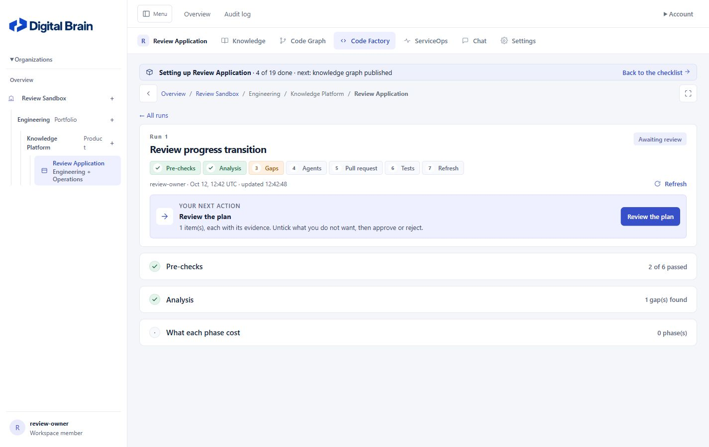
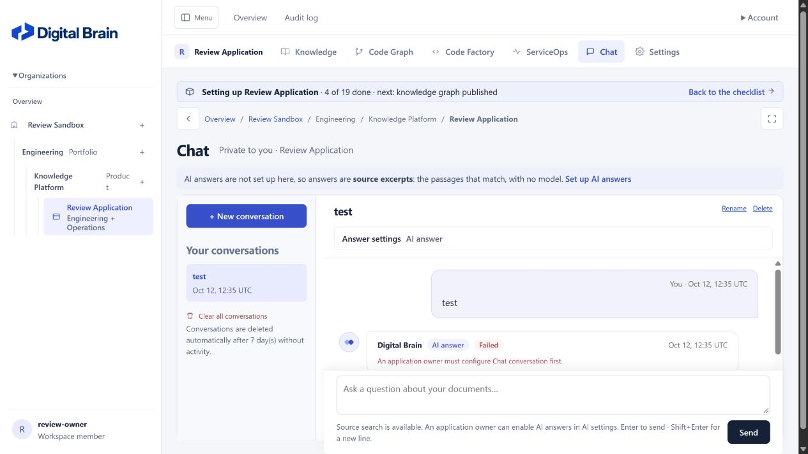

Digital Brain — desktop application review
Latest verification at
11dfd8c: All five reported defects and the remaining R01 ordering issue are verified fixed. All five gates pass; 1,789 tests ran with two skips. Read the closure report. The assessments below are historical.
Revalidation at
3b3f46a: D01, D03, D04 and D05 are verified fixed. D02's missing review stage is fixed, but simultaneous insertion of later stages reverses their order. O01 is clarified and O02 is fixed. Read the revalidation report. The original findings below are the historical baseline.
Reviewed: 12 October 2026 (IST) · Revision: 73bcfb3 · Workspace: C:\Workspace\digitalbrian
Assessment: Fix the saved-triage evidence disclosure before using the application with sources that have different readership permissions. The desktop workflow also has reproducible defects in Code Factory live progress, chat layout, stream recovery, and API validation. The application has useful security controls and broad automated coverage, but passing its existing quality probes does not cover these failures.
Desktop behavior is the priority. Mobile observations are supplementary. This was a review, not an implementation task; application source code was not changed.
Scope and method
- Reviewed Django routes, authorization and source filtering, chat and incident APIs, streaming, live refresh, templates, CSS, configuration, workers, and deployment notes.
- Ran the repository verification gates and the existing automated suite, including required Chrome browser coverage. Final results are recorded below.
- Used an isolated SQLite review database, synthetic sources/accounts, and a loopback review server. Existing application data was not used for the interaction tests.
- Inspected desktop interfaces at 1280×720 and 1440×900: overview, Knowledge, Sources, source intake dialog, Chat, Code Factory, ServiceOps, and Settings. Tested source-search chat, dialog switching/cancel, and the transition from running analysis to review.
- Used targeted Django-client probes and an isolated JavaScript harness to reproduce authorization, API, and temporary-disconnection behavior. No live AI calls, connector imports, repository writes, approvals, or external messages were performed.
Priority: P1 = resolve before release into an affected environment; P2 = fix in the next development cycle; P3 = polish or a product/deployment decision. Confidence distinguishes live reproduction from bounded code-level testing.
Findings
| ID | Priority | Area | Finding | Evidence |
|---|---|---|---|---|
| D01 | P1 | Security / functional | Saved triage briefs disclose evidence without current source-permission or sensitivity checks | Reproduced through the bearer API |
| D02 | P2 | Desktop workflow | Code Factory live updates omit newly available stages, leaving the review link without a target | Reproduced in the browser |
| D03 | P2 | Desktop UI/UX | Chat composer overlaps the message viewport on a laptop-sized window | Screenshot and DOM measurements |
| D04 | P2 | Reliability | A transient SSE transport error closes the answer stream and presents it as finished | Isolated JavaScript reproduction |
| D05 | P2 | API correctness | Array/object values for chat mode return HTTP 500 rather than a JSON validation error |
Reproduced through the bearer API |
| O01 | Decision | Access-control scope | Direct source detail pages reveal full content to application members excluded by the source ACL | Reproduced; narrower protection is documented |
| O02 | P3 | Desktop polish | Sidebar hierarchy type labels break mid-word | Desktop screenshot |
D01 — Revalidate saved triage evidence for the current reader
Location: serviceops_triage.py:264, api_triage.py:82, and api.py:245.
run_still_verified() checks active state, digests, and matching quotations. It does not check sensitivity or permissions.permitted(entry, current_user). brief_payload() has no reader argument, and the read endpoint fetches any run in the authorized application. The MCP brief uses the same serializer.
Reproduction: In the isolated database, a saved brief contained evidence from a source whose access_principals included the owner but excluded the viewer. Reading the brief with the viewer's valid application token returned 200 with the full excerpt. Changing the source sensitivity to restricted still returned 200 with the excerpt. The fixture simulated an already-saved brief; it did not call a model.
Impact: Application membership becomes sufficient to read evidence retained in another person's brief, and restricting a source does not prevent this saved output from citing it. This contradicts the source screen's claim that restricted sources are not cited by ServiceOps.
Recommended fix: Pass the current reader through brief serialization and validate the incident, evidence, and hypothesis citations against current answerability and source ACLs. Apply the same rule to REST, MCP, and rendered run details. Return a safe refusal/stale-evidence response when required evidence is no longer available; do not return a partially verified hypothesis as if it were complete.
Acceptance checks: An excluded reader cannot receive the excerpt; changing a label to restricted invalidates an existing brief; an allowed reader can still read unchanged evidence; revocation works consistently across REST/MCP/browser surfaces.
D02 — Add newly available Code Factory stages during live refresh
Location: documents.js:70, run_detail.html:29, and factory.js:16.
The refresh loop iterates only the existing page's [data-live] elements and replaces matching keys. Stage 3 is rendered only when items exist; later stages also have conditional rendering. A stage absent at initial load has no element for the refresh loop to replace.
Reproduction: Opened a running fixture without a plan, then simulated worker completion by saving a plan/item and setting awaiting_review. The header changed to Awaiting review, with Review the plan linking to #stage-3. The page still had no stage-3, and data-live-pending disappeared, so polling stopped. Clicking the link changed the hash without showing review controls. Reloading immediately displayed the gap, checkbox, review note, and approval/rejection controls.
Impact: The principal desktop analysis-to-review workflow stalls until a user discovers the manual refresh workaround. Similar insertion problems can affect later conditional stages. In addition, new or replaced markup needs enhancement initialization: the Select all/Clear all toolbar is bound only once at page load.
Recommended fix: Render stable wrappers for every stage, or reconcile additions/removals within a stable stage container. Delegate enhancement events or run an idempotent initializer after replacement. Preserve focused fields and unsaved review selections.
Acceptance checks: Running → awaiting review reveals usable controls without reloading; approved → prepared/delivered reveals the next stage; Select all works on inserted controls; user-entered notes survive polling.

Compare the same run after reload.

D03 — Keep the desktop composer from covering messages
Location: redesign.css:3283, plus the legacy flex sizing in app.css:97.
At 1280×720, with onboarding unfinished and an AI-setup notice above the conversation, the message area extended from y=409.75 to 609.75. The sticky composer started at y=586.5, overlapping 23.25 px of that area. The composer also extended below the measured panel boundary. The screenshot shows the bottom of the answer/action region covered.
Impact: Readers have less visible answer space and can lose access to lower message content/actions behind an unrelated input panel. The same arrangement is more severe at narrow widths, but the desktop case is sufficient to prioritize the fix.
Recommended fix: Give the composer a reserved, non-shrinking layout row, calculate the remaining message area from the actual header height, and limit sticky behavior to a container that preserves space for it. Check long application names and setup banners, not just the shortest fixture.
Acceptance checks: At 1280×720, 1366×768, and 1440×900, the composer and latest message actions do not overlap, with setup both finished and unfinished. Keyboard focus must remain visible at browser zoom.

D04 — Distinguish transient transport errors from terminal model errors
Location: chat.js:165 and chat.js:93.
The error event listener handles both server-sent error frames and native EventSource transport errors. When a transport event has no JSON data, the parse fallback still calls finish(), which closes the active EventSource and resets the composer. The later source.onerror check cannot preserve reconnection because the earlier listener already closed the stream.
Reproduction: The isolated harness loaded the actual static/chat.js, started an answer, and delivered an error while the simulated EventSource was CONNECTING. It changed from closed:false / Stop to closed:true / Send / status hidden.
Impact: A short connection interruption terminates automatic recovery and can leave an incomplete answer presented without an actionable connection state. Whether the worker has saved its final result depends on timing; the harness does not establish a particular billing outcome.
Recommended fix: Use a distinct event name for application errors, or distinguish message events with payload data from transport errors. Show a reconnecting state, reconcile the saved message after reconnect, and bound retry behavior. Confirm resume does not initiate duplicate paid work.
Acceptance checks: An interrupted stream either resumes safely or clearly exposes recovery; terminal provider errors finish once; buttons and stored answer status stay consistent.
D05 — Validate the type of API mode before set membership
Location: api_chat.py:102.
mode_of() tests the request's value with value not in MODES, where MODES is a set. Lists and dictionaries are unhashable, producing an uncaught TypeError.
Reproduction: Authenticated POSTs with {"question":"test","mode":[]} and {"question":"test","mode":{}} both returned 500 and an HTML error page.
Recommended fix: Require a string before membership testing and return the normal JSON invalid_request response with HTTP 400. Add cases for array, object, null, boolean, number, and an unknown string.
Acceptance check: Every malformed mode returns a bounded JSON validation error and creates no conversation/message or paid call.
Product and UX observations
O01 — Decide whether source ACLs protect direct reading. knowledge_detail() checks application access and renders full entry.content without checking the source permission list. The viewer probe returned 200 with content even though the viewer was excluded by that list. The repository explicitly scopes these permissions to answers and permits application members to see source structure; the source screen also says restricted sensitivity does not prevent application members from reading it. Therefore this is a documented product boundary to decide, not an assertion that all source restrictions are accidentally bypassed. If imported Jira permissions are intended as a confidentiality boundary, enforce them on source detail/download/list/explorer surfaces as well. If application-wide reading is intended, explain that consequence clearly when enabling the connector option.
O02 — Sidebar label wrapping. The synthetic product name “Knowledge Platform” causes the adjacent “Product” label to render as “Produc” plus “t” at both reviewed desktop widths. Reserve a non-shrinking width for type labels or put them below the resource name. Keep the resource name wrap/ellipsis independent of the label.
What worked in the desktop review: Navigation distinguishes application features; Settings groups related controls coherently; source intake switches between Documents/Folder/Link and returns focus on cancel; source-search chat produces evidence; Code Factory and ServiceOps empty states provide actionable next steps. Browser error logs were empty on the manually inspected paths. These checks used a small synthetic dataset, not production-scale content.
Mobile — lower priority: At 390×844, the composer can cover the initial message region much more extensively (message area starts at y≈702; composer occupies y≈640–844). Keep this under D03 as a secondary case. Navigation opened and Escape closed it; the measured knowledge page did not have document-level horizontal overflow. No mobile redesign is proposed as a prerequisite to fixing desktop defects.
Functional coverage and remaining gaps
| Flow | Evidence | Assessment |
|---|---|---|
| Sign-in and workspace navigation | Disposable owner account; browser walkthrough | Working in reviewed scenario |
| Source library and intake UI | Dialog switching, cancellation, source detail probe | Usable intake; access-scope decision O01 |
| Source-search chat | Sent a synthetic query; received source excerpt and citation | Working |
| Failed AI answer recovery UI | Unconfigured AI fixture; streamed failure displayed | Failure shown; layout issue D03 |
| Streaming interruption | Actual JS in isolated harness | Defect D04 |
| Code Factory analysis → review | Simulated worker completion; live browser and reload comparison | Defect D02 |
| Saved triage brief reading | Allowed application token, excluded source reader, restriction change | Defect D01 |
| Chat API invalid input | Authenticated malformed-mode requests | Defect D05 |
| Live AI, external connectors, PR delivery | Not invoked during manual review; automated tests use mocks | Requires integration validation |
Non-functional assessment
Security: Positive evidence includes deny-by-default application scoping, private response cache policy, CSP, password hashing/lockout settings, file-backed credentials, and bounded outbound-fetch/storage paths. These controls do not compensate for D01 or establish an exhaustive security audit. Source-permission revalidation needs to cover saved outputs as well as new retrieval.
Reliability: Worker lanes separate intake and longer graph/AI tasks, and the stream limit reserves web-request capacity. D02 and D04 expose gaps at transitions and interruptions despite useful happy-path tests. Regression coverage should prioritize changes of state and loss of connection.
Performance: The first scorecard measured graph median 33.3 ms and keyword median 21.0 ms, versus baseline 8.0 ms / 4.8 ms. Both exceeded the allowed 15 ms absolute regression tolerance. This run overlapped automated checks; it is evidence of a failed gate, not proof of a code-induced slowdown. The post-suite rerun measured 8.4 ms / 5.4 ms and passed; the earlier failure did not persist after concurrent work stopped. No concurrent-user, sustained-upload, large-graph, or production database load test was performed.
Capacity and cost: The API throttle is process-local (api_auth.py:156); a deployment with multiple workers needs a shared limit. Shared stream leases address some multi-process coordination, not token throttling. The monthly AI budget deliberately checks receipts before starting calls and does not reserve concurrent spend (budget.py); it should be described as a start-call guard, not an exact billing ceiling.
Operations: Production preflight validates Django defaults with temporary secrets; it does not connect to real PostgreSQL or validate deployment infrastructure. Deployment notes leave backup/restore implementation to the operator and document scanner startup/latency constraints. Validate a real restore, TLS/proxy routing, document scan, and PostgreSQL behavior before an operational readiness decision.
Maintainability: workbench.py has 1,487 lines, serviceops.py 1,303, and redesign.css 3,736. Multiple chat layout rules and separate enhancement initialization make cross-state behavior harder to reason about. Consolidate the chat sizing rules after D03, and define a small shared contract for enhancing live-replaced markup. These are maintenance recommendations, not independent correctness defects.
Verification results
| Gate | Final result |
|---|---|
Ruff: check digitalbrain platform_core scripts manage.py |
PASS |
Migration drift: makemigrations --check --dry-run |
PASS — no changes detected |
Full Django suite, DIGITAL_BRAIN_REQUIRE_BROWSER=1 |
PASS — 1,781 run, 1,779 passed, 2 skipped, 321.917 seconds |
| Production-default preflight | PASS — no Django deployment warnings |
Scorecard --check, rerun after suite completion |
PASS — no regressions |
The two skips were the PostgreSQL-only full-text test (this run used SQLite) and a symlink test (the account could not create symlinks). Chrome tests ran, including rendered text contrast, headings/control names, keyboard focus, keyboard dialog use, screen/script checks, and graph interactions. The suite's laptop chat check passed its existing starter-question assertions; D03 measures overlap of message/action space, which that check does not assert. Live-progress browser tests cover a stable ServiceOps container, not insertion of Code Factory's missing review stage.
Evidence: verification summary, triage probe, factory transition probe, stream probe, API probe.
Full test output is retained locally in .runtime/review-tests-final.log.
The original sandbox attempts encountered temporary-directory access issues and browser-process restrictions. They were superseded by a run with a workspace-local temporary directory and required browser coverage outside the sandbox. Warnings or printed “FAILED” messages produced inside mocked test fixtures are not counted as test failures; the final test runner summary is authoritative.
The scorecard's frozen 34-source/16-question corpus reported graph source retrieval 16/16, keyword retrieval 14/16, citation re-verification 100%, and no leaks in its tested paths. The saved-triage probe is outside that coverage, so those results do not refute D01.
Recommended order of work
- Fix D01 and add revocation/restriction regression tests across saved brief readers.
- Fix D02 so desktop users can proceed from analysis to review without a reload, and test the entire stage transition chain.
- Fix D03 at laptop/desktop widths, then validate D04 with actual dropped-stream browser tests.
- Fix D05 and broaden API input-type validation.
- Resolve O01 as a product confidentiality decision. Address O02 and secondary mobile polish afterward.
Before declaring release readiness, fix the findings and complete external integration testing. The repository verification gates passed this review run. This report does not claim universal link coverage, penetration testing, accessibility certification, or production load readiness.